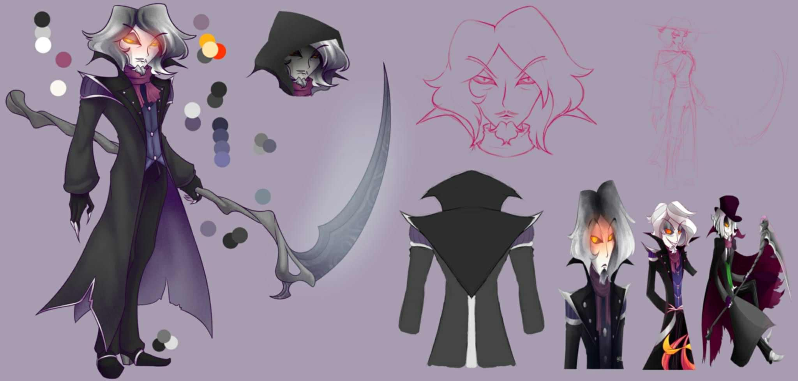
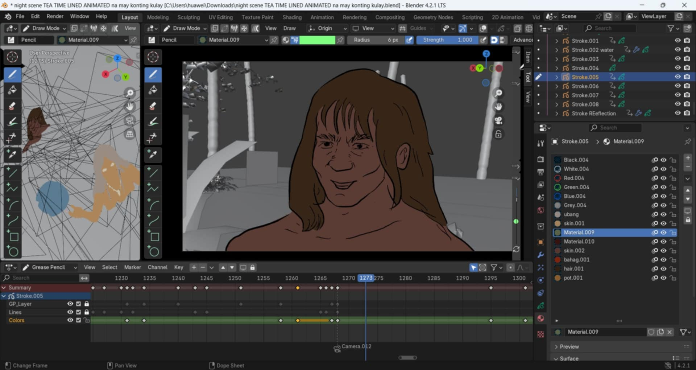
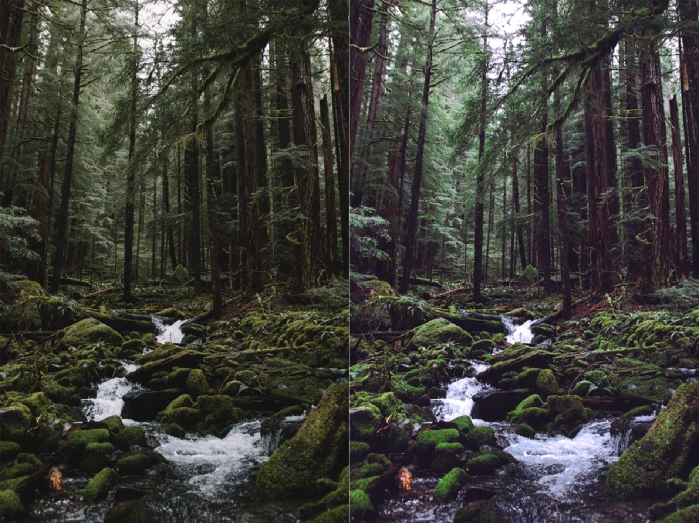
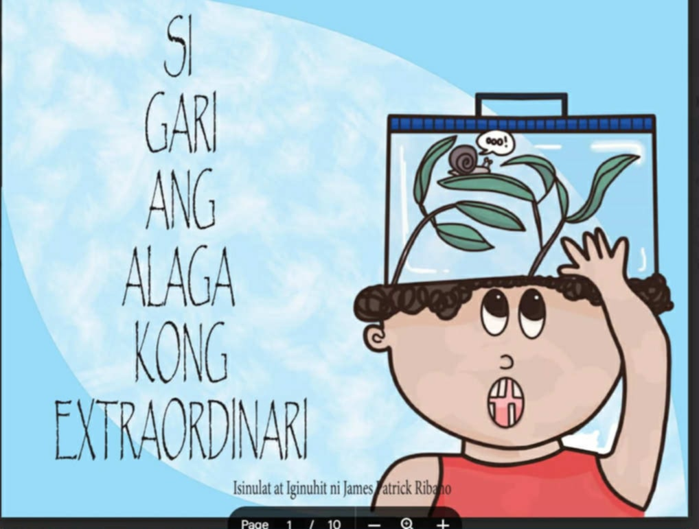

3D Modeling
Creating detailed 3D models using Blender and Maya.

Character Illustration
Hand-drawn and digital character art with vibrant styles.

2D/3D Animation
Animated shorts and motion graphics using Toon Boom and Blender.

Color Grading
Enhancing video mood and tone with professional color grading.

Story Book
Illustrated storybooks combining art and narrative design.